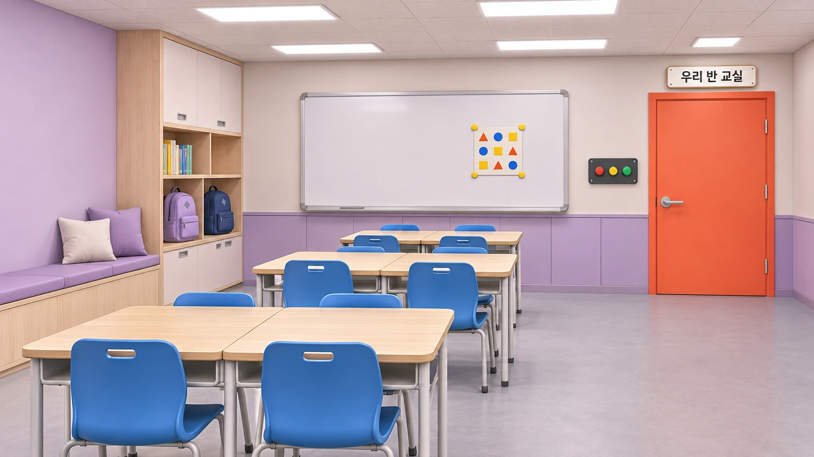

학교 탈출
하교 종이 울렸는데 교실 문이 안 열려요.
컴퓨터실에 가면 학교 출입문을 다시 열 수 있대요.

게임 안내
일곱 교실을 지나 10분 안에 하교할 수 있을까요?
- 가고 싶은 곳의 바닥을 누르세요. 화면을 끌면 몸을 돌릴 수 있어요.
- 문 옆 장치를 누르면 그 방의 문제가 나와요. 주변 물건을 눌러 단서를 찾아보세요.
- 퍼즐을 풀면 문이 열리고 다음 교실로 넘어가요. 힌트를 한 번 보면 30초가 줄어요.
하교 종이 울렸는데 교실 문이 안 열려요.
컴퓨터실에 가면 학교 출입문을 다시 열 수 있대요.

일곱 교실을 지나 10분 안에 하교할 수 있을까요?